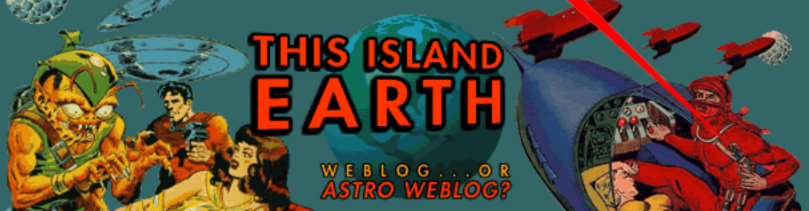
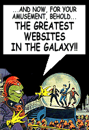
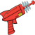
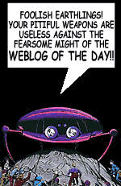

What
is This Island Earth?
TIE is a weblog.
The term "weblog," or blog, is starting to mean very different
things to different people. To some, it's a form of journalism covering
the web, and its practitioners are akin to newspaper columnists. To
others, it's more of a literary genre, a kind of online journal of
one's thoughts and observations, filtered through a web-centric consciousness.
And to its detractors, it's little more than a glorified links page.
For me, TIE functions as a little bit of all of those things.
I'm not sure I can define exactly what I want to do with this weblog,
and I'm not sure I really want to, either. The day I feel obligated
to write a certain way or about certain things simply because of some
definition I've formed for what I'm doing here, is the day I should
probably pack it in and move on to something else.
What you'll find here, mostly, is links to stuff I find on the web
that I care about, along with some commentary to express why I care
about it. Or just random Prince lyrics. Hey, it's my little corner
of the web, dammit, and doves can cry if they want to.
This Island Earth
is also the title of a classic 1950's science fiction film. If you
haven't seen it, I highly recommend it. There are reasons why I call
this weblog This Island Earth, but they're so lengthy and boring
that I won't go into them here.

The Rough Guide to Bryan S. Byun
Bryan
is usually found in his office, bathed in the radiation of glowing
monitors hooked up to his aging, Frankenstein Monster-like Macintosh
G3. At various times of the day, he may be seen peering suspiciously
through the blinds of his window, glaring at passersby.
Where to Eat
The kitchen is the destination of choice for breakfast, lunch, or
dinner. Menu varies, but usually includes some type of meat or dairy
product accompanied by a small portion of grains. Generic supermarket
soda accompanies overpriced import beer on his refrigerator shelves,
which are usually well-stocked with perishable foodstuffs in various
stages of decomposition owing to the fact that Bryan buys $100 worth
of groceries and then winds up eating out four times a week because
he's too lazy to cook.
Places of Interest
Fun destinations are a scarcity in the Spartan surroundings in which
Bryan lives. Visually-starved visitors may enjoy his television set,
which comes equipped with a VCR and a DVD player. The more musically
minded should check out his CD collection, which has been more or
less frozen in time since around 1992. Although Bryan has virtually
no awareness of music recorded after that time, he is often found
snapping his fingers and nodding his head to the latest swingin' hits,
after which he will ask you what the name of this "happenin'
tune" might be.
Another point of interest for visitors is the Byun-o-matic Zoo, which
at present consists of several Syrian hamsters and two Dwarf hamsters.
Visitors may enjoy placing their hands inside the Dwarf hamster cage
and watching the ill-tempered, territorial creatures viciously attack
their fingers with their razor-sharp incisors.
Nightlife
Bryan tends not to go out at night, for the absurd reason that he
hates to lose his parking spot. And since he's not much for clubs
or bars, and considers movie theaters in Seattle "beneath contempt,"
most nights find Bryan engaged in quiet contemplation at home, in
front of his bank of brain-tumor generators (known more commonly as
computer monitors) or, in the warmer months, out on his patio clutching
a bottle of vodka and shouting at his neighbors.
Ten Essential Facts about Bryan S. Byun
1. I am a Type Four on the Enneagram, which means I am neurotic and self-destructive. You should probably limit your contact with me, as prolonged exposure may lead to anxiety, elevated blood pressure, and severe ennui. Also, I will hit you up for money.
2. My three favorite movies of all time: Raising Arizona, Annie Hall, and Ferris Bueller's Day Off.
3. I am a morning person who thinks he's a night person. This means that, even though my mood, focus, and ability to reason are all at their height before noon, I have an uncontrollable urge to stay up all night so that I wake up late and act like a crabby jerk if anyone tries to wake me up early.
4. My memory is incredibly bad. I forget names I've just been told, and huge volumes of information slip effortlessly through the wide holes in the sieve of my brain. I've read Catcher in the Rye twelve times and I still can't tell you what happens at the end.
5. After a little "incident" when I was four, I acquired an irrational fear of Zippo lighters and didn't know how to light one until I was 22 years old.
6. I love sushi, and if I could afford it I would gladly eat Japanese food of any kind seven days a week, 365 days a year.
7. My favorite authors: (in alphabetical order) Nicholson Baker, Ray Bradbury, Charles Bukowski, Raymond Carver, Harlan Ellison, Frank Herbert, Stephen King, Kurt Vonnegut. Favorite book? Probably Vonnegut's Breakfast of Champions, at least this year. My favorite book growing up was Robert Heinlein's Have Spacesuit, Will Travel. I read that book at least once a year for eight years, until the paperback was in shreds.
8. My favorite comic book when I was a kid was Howard the Duck. I had a complete set of them, but my mother threw them away when I left for college. Today, my favorite comic artist/writers include: Chris Ware (ACME Novelty Library), Evan Dorkin (Dork, Milk & Cheese), Neil Gaiman (Sandman), Jaime & Gilbert Hernandez (Love & Rockets), Adrian Tomine (Optic Nerve), Julie Doucet (Dirty Plotte), and Alan Moore (Watchmen, From Hell). I want to get into Seth (Palookaville) and Dan Clowes (Eightball), but I can't afford yet another obsession.
9. I love to drive! There's nothing better than taking a long road trip with a Stephen King audiobook in the car stereo. I especially like stopping at all the cheesy tourist traps and scary roadside diners. Side note: riding as a passenger on any trip longer than an hour, however, makes me nauseated.
10. I am incredibly self-absorbed, and therefore enjoy compiling lists about myself.
Hey,
you — what are you doing here? It's holiday time! Turn off the
computer and go outside...have a barbecue...go on a picnic...watch
some fireworks...buy some cheap
illegal Chinese firecrackers and try not to burn your fingers
off.
Princess
Alsacia passed this along:
The Sailor Saves The Day
A young woman in New York was so depressed that she decided to end
her life by throwing herself into the ocean. She went down to the
docks and was about to leap into the frigid water when a handsome
young sailor saw her tottering on the edge of the pier, crying.
He took pity on her and said, "Look, you've got a lot to live for.
I'm off to Europe in the morning, and if you like, I can stow you
away on my ship. I'll take good care of you and bring you food every
day." Moving closer, he slipped his arm round her shoulder and added,
"I'll keep you happy, and you'll keep me happy."
The girl nodded yes. After all, what did she have to lose? Maybe a
fresh start in Europe would give her life new meaning.
That night, the sailor brought her aboard and hid her in a lifeboat.
From then on, every night he brought her three sandwiches and a piece
of fruit, and they made passionate love until dawn.
Three weeks later, during a routine inspection, she was discovered
by the captain. "What are you doing here?" the captain asked. "I have
an arrangement with one of the sailors," she explained. "I get food
and a trip to Europe, and he's screwing me."
"He sure is, lady," the captain said. "This is the Staten Island Ferry."
This
Ironminds article on the
demise of crank calls in the age of Caller ID brings back some
bittersweet memories of childhood, when, like milions of other idiot
kids, I engaged in the stupid practice of crank calling. Herewith,
three of my dorkier crank calls:
1. (Age 11) Calling up a bowling alley and actually trying the old
"Do you have twenty pound balls?" routine. Response: a bored
"That's an old one." Click.
2. (Age 13) An evening spent with my fellow dweeb Danny, paging through
the phone book looking for funny names, leads to a series of phone
calls to the answering machine of one David Bean, with brilliant messages
like [phony redneck accent] "Hey, is this David? It's your cousin,
Franken. You know...Franken Bean?? Hyuk hyuk hyuk hyuk!!!" Response:
None.
3. (Age 12) My best friend Evan had a beef against this Vietnamese
family that went to his church. I never quite understood just what
Evan had against these people, but I was happy enough to go along
with his plans to torment them with 2 a.m. crank calls. Two that I
came up with included one where we just played weird videogame sounds
from my computer when they picked up, and another particularly cruel
one where I pretended to be the lawyer of the man who was sponsoring
them in America: "I represent [...], your sponsor. I'm afraid
that [...] cannot sponsor you any longer, and you'll have to return
to Vietnam." Response: Long silence with faint sounds of a rapid-fire
discussion in the background, then a shouted "FUCK YOU!"
Click.
Today
I went out for a late lunch with Sandra and her sister, who's in town
from Oregon for the holiday. Our lunch spot: Chinook's
at Salmon Bay, a clean, well-lit joint in the Fishermen's Terminal.
Decent food, nice view: recommended. Earlier that day, we'd had a
lengthy discussion about whether or not to try and view the fireworks
over by Gas Works Park at Lake
Union, the conclusion being that none of us really felt like wading
through a carpet of squalling, glucose-coated brats (and I'm talking
about the parents here) just to sit in a patch of dried dog
urine for three hours waiting for the show.
If that sounds a mite curmudgeonly, it's because I've never been a
huge fan of fireworks shows. My main interest in explosives has always
been using them to blow stuff up, not to simply watch them
blow up by themselves. As a kid, my favorite part of the Fourth of
July was the day after, when we'd take all the unused firecrackers
and re-enact Thirty
Seconds Over Tokyo with plastic toy soldiers and paper airplanes
with bottle rockets taped to the wings. Yep, we had a lot of laughs,
me and Teddy Kaczynski. Wonder whatever happend to that kid?
After lunch, we headed back to Sandra's place through a
gauntlet of motorcycle cops who were taking motorists down like
bears at a salmon run. Tense. But we made it through. (Ha! You'll
never take me down, ya lousy coppers.) There, we capped off the evening
with a viewing of the Boogie
Nights DVD, which Sandra's sis had never seen. (Too Much Information
Quote of the Day: "I've been watching porno for 16 years and
I've never watched one all the way to the end." — Sandra's
sister)
Later, after a bit of internal debate, I decided to hightail it back
to my place with the new Jimmy
Corrigan book and a package of cajun smoked salmon (both of which
Sandra, to my everlasting gratitude, had scored for me at the Public
Market) clutched in my — well, dry, but emotionally sweaty
— hands.
I had harbored some trepidation about Sandra's sister visiting, all
things considered, but there was no tension so far as I could tell.
Everything was cool.
On the way home, for some reason these lines from Boogie Nights
floated into my head. They're spoken by this guy who's schmoozing
Becky Barnett at the New Year's party:
"As far as I'm concerned, it's all about love. If you love someone,
how hard can the world be? I mean, people will come and go,and so
will problems, but ultimately, if you have love on your side, and
it is just deep down in your soul, what's the problem going to be
that takes your attention away from that?"
It's meant to be kind of a cheesy, 70's-era spiritualistic sentiment,
but driving home alone at 8 p.m. on the Fourth of July, something
about it worked its way under my skin. I thought about the handful
of times in my life that I'd actually felt that way, that I had love
in my heart and in my life and everything would be all right.
And no, this isn't going to be a maudlin lament about how I've
never really loved. I just think it's interesting — and when
I say interesting, I mean sad, pathetic, awful, and tragic
— how human beings all want pretty much the same things, are
desperate for them, even, and yet we make it so difficult for ourselves
and others to gain access to such a simple, vital thing.
I got home, and there were three messages from Sandra, and one from
my sister, Sharon. It occurred to me that Sharon had left me four
or five messages over the past three months, and I hadn't replied
to a single one of them. So I called, and left her a message, and
she called back a few minutes later, and we talked for while, just
shooting the breeze. After we hung up, I turned on the TV to watch
the fireworks show (nice fireworks, incredibly dense crowd, I'm so
glad we didn't go). Just before it started, the phone rang —
Sandra. "I just wanted to see if you missed me," she said.
I smiled. "Of course I do."
And that's where I am now.
After
two weeks of complaining about being sleep-deprived, I slept for twelve
straight hours last night. So this morning I should be bounding around,
full of pep, vim, vigor, and other energetic nouns, but instead all
I can think about is crawling back under the comforter and sleeping
for another twelve hours. Oh, and happy Fourth of July.
Mlle.
Amorce d'Écureuil inspires chortles of amusement throughout
Byun-o-matic H.Q. today with her mini-dissertation on our inconsistent
reactions towards bodily fluids.
Why are tears benign while sweat inspires the upturning of noses?
Perhaps because tears are somewhat more "pure," emerging
without worldly taint from the ducts of those organs known as the
windows to the soul, whereas sweat is commonly associated with such
common, debased regions of the body as the armpits and feet. Of course,
it must be noted that perspiration is not always shunned: droplets
of this fluid have been known to bead quite alluringly on various
body parts of attractive specimens of both sexes. And the rhetorical
power of the phrase "I want to lick the sweat from your thighs"
need not be explained to those who have felt its effects.
One item in the Besquirreled One's latest entry begs response, though,
because I have only just come from reading similar sentiments in the
Brunching Shuttlecocks' review
of fireworks (via the always excellent Pop
Culture Junkmail). This is the matter of bottle
rockets and their utility as pyrotechnics. To quote Ms. O'Hara:
"What is the attraction? You light them, they pop. No pretty
sparkles, no oohing and aahing." The Shuttlecocks echo: "They
whistle, they shoot through the air, then they explode, just like
a flying, exploding Andy Griffith."
Ah, but this is only half the fun! Admittedly, bottle rockets, taken
simply as Fourth of July fireworks, are a bit underwhelming. They
fly and explode, and one smiles and moves on to smoke balls or roman
candles or, God forbid, those pathetic Snap-n-pops
that always ended up at the bottom of your closet for those really
boring summer afternoons.
But here's the salient point: bottle rockets are like a kid's version
of ICBMs. They are the definitive weapon of (non-lethal) mass
destruction. You light one, it soars an ungodly distance, and then
it explodes. Anyone who doesn't see the mayhem potential in
this was never a little boy. You haven't had fun in life — real,
unadulterated joy — until you've stuck one in the barrel of a
Daisy air rifle, lit the end, and then pointed it at the smelly kid
down the block while yelling "SAY HELLO TO MY LITTLE FRIEND!!!"
Truly...how often in life can you say that you roused a sleepy Southern
sheriff's office to life with a little tomfoolery involving three
Coke bottles buried in a semicircle around the aforementioned smelly
kid's house, each pointed towards selfsame house, each containing
a bundle of three long-fuse bottle rockets?
This is one of those exquisite, fleeting pleasures one can only experience
in childhood, for when you're a kid, such antics merely get you labeled
the "neighborhood troublemaker" and nobody's mom will let
you play with their kid for the next two months. When you're an adult,
though...well, let's just say that if fellows like Ramzi
Yousef had had free access to cheap Chinese fireworks as kids,
they might have gotten their pyrotechnic urges out of their system
before getting wacky ideas like blowing up the World Trade Center.
Blowing up the smelly kid down the block: cool. Blowing up skyscrapers:
not cool.
As if
the lonely didn't have it bad enough, now it turns out that the
act of talking can kill you. Actually, this could go a long way
towards explaining why shy, introspective people tend to become worn
out by social interaction — their hearts literally cannot handle
the strain of idle chit-chat. At last, a medical explanation for my
total silence at gatherings: I'm not antisocial, I'm preserving
my health.
That's it — I'm moving into a sod hut in Montana. I refuse to
die of a stroke just because some yob has to know what time it is.
Yeah,
well, I really can't
believe they cancelled Freaks & Geeks! And people really don't
know a good thing when they see it. And who's this "Cat Power"
anyway? They sound cool....
I started some medication yesterday that has effectively turned me into a zombie for the next day or two, and I can't seem to hold a coherent thought in my head. So, no update today. Instead, please enjoy today's main event, a one-on-one "ultimate" style poetic cage match between the two grande dames of modern verse, Anne "The Neuroticator" Sexton and Sylvia "The Bipolar Steamroller" Plath. Get ready to rumble!!!
¿Quién es más macho?
Anne Sexton | Sylvia Plath
A book
containing the only known copy of Archimedes's writings in the
original Greek has been found. Among the revelations: his famous exclamation
was not in fact "Eureka," but "HOLY FUCKING SHIT!"
Sex:
n/a
Drugs: 1 daily to be taken with a full glass of water, preferably
after meals.
Rock & Roll: The Smiths, "A
Rush and a Push and the Land is Ours"
Donkeymon
redesigned! Nice work — very readable — although I have
to admit, I miss the old color scheme.
Our
weblog editor, Bryan, is
currently out on assignment in the Pekanbaru region of Sumatra, searching
for a rumored cure for the rare and deadly illness known as lazysackofshititis.
In his absence, we have invited a guest editor to handle This Island
Earth's weblogging duties.
Paris,
1947. Germaine and I were lunching at the Café Miasme,
a charming bistro perched alongside the Canal des Malades Chiens,
of the sort that used to blossom like wildflowers in Paris before
the war. We were waiting there for the arrival of Germaine's brother,
Tito, who had that very day been appointed to DeGaulle's cabinet.
Germaine, who I daresay was more anxious for his brother than the
man himself, was deeply into his third demitasse of espresso
and was positively shaking like a leaf.
"Germaine, old friend," I said, placing a paw on his quivering
shoulder. "Calm your nerves. It is a great day for Tito...a great
day for France, n'est-ce pas?"
Germaine only shook his head, his eyes never leaving the swirling
blackness of his espresso.
"Besides," I continued, casting my gaze out onto the busy
Rue de Chat Confus, where crowds of morning shoppers were already
congregating outside the booths of the produce vendors and volemongers,
"I hear tell that General DeGaulle himself has invited both you
and your brothers to the state dinner at Versailles." I glanced
at Germaine, hoping my words would bring the touch of a smile to those
anxious lips. But he remained unmoved.
Frustrated, I leapt from my chair and, oblivious to the startled gasps
of the other patrons, I stood over a shocked Germaine and clutched
his shoulders. "Germaine!" I roared. "It is me who
stands before you now — El Tigre Furioso — your friend of
old! Did we not stand together against the Führer in the Resistance?
Was it not I who saved your life at Nantes, at the boulangerie at
Nîmes, who sang war songs with you at Avignon? I ask you, dear
friend — to whom can you unburden yourself, if not to me?"
Germaine stared up at me with wide, unblinking eyes. "Aiiieee!"
he screamed. "C'est un tigre! Aidez-moi! Aidez-moi!"
At that moment, the realization struck me — I did not comprehend
a single word of French! Quickly I devoured Germaine and paused only
to finish my espresso before making haste down the Rue de Chat
Confus to my room at the pension. I was heartbroken, and to add
insult to injury, Tito gave me a frosty reception that evening at
the state dinner. But I learned a valuable lesson that day, my friends.
A valuable lesson indeed, in the vagaries
of the human heart.
Friends,
let me say just one simple phrase to you: Archie
McPhee.
If you
have not yet discovered the multitude of exotic delights to be found
at this establishment, you are depriving yourself of one of the great
joys of life.
I first
met young Miss Jennifer
at a luncheon at Prime Minister Chamberlain's estate at Loxhamshire.
This was, I believe, 1935 or 1936, on the cusp of the war that would
soon sweep us all into its bloody vortex. It was an innocent age,
Gentle Reader, a more civilized age. I was immediately taken with
Miss Jennifer's charming mien, her graceful wit, the mischievous twinkle
in her delicate blue eyes. Ah, I thought ruefully, were I but twenty
years younger! That evening, I immediately rushed home to my flat
on Wextorporshire Lane and logged onto her webcam, only to espy the
young lady in the midst of an
act of such depravity that I shudder to even think of it. The
disappointments of life are many and profound, Gentle Reader.
I grew
up with a strong sense of empathy for my fellow human beings. It was
important to be kind, because this world can be a terrible place,
and people can be so very cruel to each other. There's a line from
an old Star Trek episode to the effect that the three most important
words are not "I love you," but "let me help."
To help. To protect. To heal. To save, if need be, but most importantly,
simply to be there, to let the other person know, you are not alone.
There have been times when I have been there, like when my sister
landed in the psych ward after a botched suicide attempt, and my parents
couldn't bring themselves to pick her up. There have been many more
times, though, when I haven't been there.
When my grandmother passed away in a nursing home, abandoned by her
sons, there was no one to hold her hand and let her know that she
was loved.
My dog Charlie died on the living room floor while I was at school.
I wasn't there to scratch him on his favorite spot under his chin,
and tell him what a good dog he was.
Their ghosts haunt me. I am forever left with the knowledge that they
died alone, that in their last moments on Earth, they reached out
for comfort, for warmth, and there was nothing.
"The opposite of love is not hatred, but indifference."
— Elie Wiesel. Too true, because what is most antithetical to
love, but the complete absence of any feeling whatsoever?
There is nothing more deadly to the soul than aloneness. The worst
calamity can be endured in the presence of a true friend, whereas
the most placid existence can be a cage of misery in the absence of
companionship.
So I try to be kind, and I try to atone for my sins of absence as
best I can. But as I grow up in the world, I realize that sometimes
it's a hard thing to be kind, to be a friend. There are some for whom
kindness is an addiction, an end in itself. For them, love is not
a ladder out of the abyss, but the abyss itself, a void at the center
of their souls that can never be filled. They have set themselves
on a trajectory into darkness, and all that you give to them only
speeds, it seems, their descent. And God help you if you are swept
along for the ride.
There is a point where you have to remove yourself from their side.
To pull back the helping hand, lest you are pulled down into the pit.
And you feel the guilt, seeing yourself suddenly as, not the helper,
the White Knight, but just one of the indifferent crowd. You see yourself
as they see you: selfish, withholding, disloyal. And you ask yourself,
is there something I could do that would truly help? Have I done all
that could be expected of me? That I expect of myself?
Friend, I have been there for you when you needed me. I have given
you what I had to give. And now I have to say farewell, because what
you need now is something I cannot provide, and to try would only
diminish me and hurt you.
I love you, but you are on your own. That is the hardest thing for
someone like me to say, but I have to say it.
Not from indifference, but love.
A special
shout out to Lydia for
this Fight Club-esque Ivory soap carving. For obvious reasons,
I think it's rather keen.
What
the fuck did I do to my arm last night?! It's stuck in a permanently
bent position — I can't straighten it out! (This is my left
arm, btw. I haven't had my right arm in that position for ages
now; thanks, Paxil.)
I wonder if this has something to do with my dream where I was riding
a bicycle?
Happy
Birthday, Lisa! Fans of
Tori Amos and Euro music, visit Lisa's website, Aural
Fixation. 'S fun.
May
I be the 20,793rd person to opine that the new Apple
Cube is incredibly cool? And when I say "cool," I mean,
of course, kewl.
It's the 8-inch size and crystal-clear enclosure that make this baby
the sweetest thing to come down the pike since the iMac.
Once again, Apple has with one swift stroke moved the industrial design
bar up a notch.
The naysayers who are trashing this machine because of the $1799 price
tag are missing the big — or rather, small — picture. This
thing takes up very little room on your desktop, it's very transportable,
and almost completely silent (no cooling fan). In other words, it's
the machine that many SOHO users like myself have been dreaming of.
At least one small-business owner I know is planning on buying one
of these babies as soon as they're available. And it's definitely
on my Christmas wish list.
God, I love being a Mac user. Sure, we're in the minority, but so
are Lexus owners, and I don't hear them complaining.
You know what sucks about not being able to sleep?
You guessed it — you can't fucking sleep!
This brilliant insight has been brought to you by the letter B and the numbers 2 and 50.
Psst. Hey you. Yeah. You in the Mickey Mouse ears. C'mere.
You want to see the new teaser for Disney's Atlantis? Of course you do. Here you go, kid. Spread the word.
I've
never wished pneumonia on a friend before, but I hope Drew
has it — or rather, that it's all he has. Get well soon,
Monsieur Noir!
Super
bored at work today, so I made this silly
little game in Flash. Check it out if you're truly desperate for
entertainment.
It's
Unreasonably Large Download Day today at This Island Earth.
First up, a movie that's
a must-download for any D&D fans out there...or anyone who
merely enjoys laughing at D&D fans. It's 15 megs (and Mac users
have to go here to download
the player), but worth it. Absolutely priceless. (Many thanks to Princess
Alsacia for the link.)
Next up: Star
Wars Episode II trailer! Okay, actually, it's just a fan-made
trailer...but holy cow, what a job. I knew it wasn't the real thing,
but it still left me drooling. Lucasfilm needs to hire whoever's behind
this to do the official trailer.
I've
asked Firda
to sing The Carpenters' "Close To You" for me. I hope she
does. I've heard her singing voice (thanks to Les at Chocolatey
Shatner) and it's quite pleasant. If she fulfills this request,
I'm going to ask her to sing the entire Sound
of Music soundtrack album.
Guilty
Pleasures: So far, I've successfully avoided watching even one full
episode of Survivor or The Real World. But I'm completely
captivated by the Big
Brother webstream. I still haven't seen the television show, but
I'm hooked on the live video feeds. I was trying to figure out why
(besides the fact that I'm a shameless voyeur, of course), and I finally
realized that it's because this is like a live-action version of The
Sims.
The only way it could get better is if I could control their water
supply, or put hallucinogenics into the swimming pool. Are you listening,
TV execs? Let's take this to the next level of interactivity!
This
makes me want to cry. God Bless America!!
Stephen
King's e-book experiment is a success — so far. Wired
News reports that over 78% of the 152,132 people who downloaded
The
Plant have coughed up their buck. What does all this mean
for the future of e-publishing? Maybe nothing. After all, even if
King clears his estimated $1-2 million for all eleven or twelve installments
of his electronic novel, that doesn't mean much to non-brand-name
authors looking to hawk their wares online. King's book is a hit because,
well, he's Stephen King. He could scribble a short story on
a piece of toilet paper, wipe his ass with it, and sell it on eBay,
and a thousand people would bid on it.
On the other hand:
• It's further evidence that the Internet is a viable commercial
venue for peddling the written word;
• It's a very public step in the continuing migration of artistic
works into digital form — like it or not, the dusty old phrase
"paradigm shift" is coming back into play in a major way,
and we're all going to have to reexamine the ways we think about concepts
like art and copyright; and
• It opens up the possibility of the publishing field exploding
into niche markets, much the way e-zines, online journals and weblogs
cater to small, narrowly focused audiences. Instead of marketing this
King book to every reader in America, as has been the case with previous
King novels, this book has had limited publicity, knowledge of it
circulating mainly via the Internet and word of mouth among King fans.
Which means lower sales, but also lower advertising costs. So, a book
about extraterrestrial ballet dancers in 18th century Austria that
might never see print under today's system, because the potential
market is too small to justify the expense of printing and distribution,
could (God help us) not only see the light of day, but be exposed
to a global audience through the magic of the 'net.
In addition, as King points out on his website, his e-book will continue
to be available — "in print," in other words —
indefinitely. Something authors like King enjoy as a matter of course,
but which mid-list and lower authors seldom achieve, with poorly-selling
books being quickly disposed of in favor of the latest promising paperback.
A given novel by a lesser known author might only make a few dollars
per month, but over several years, it would add up to more dollars
(and exposure) than that novel would earn in a typical publishing
lifetime (if it were fortunate enough to be published at all).
So, if a Stephen King can make a million or two with his book, is
it unrealistic to imagine that today's unknown, aspiring author could
stand to make a modest sum from his or her work?
Electronic publishing is not, I think, ever going to supplant the
traditional bound book. Many readers, like myself, simply prefer the
tactile and visual experience of holding and reading a real book,
and until they come out with an e-book reader that is waterproof,
shatterproof, and displays at 300-plus dpi, I'm sticking mainly with
traditional media for my reading pleasure. But clearly this is an
important step down the e-publishing road. Where it goes is anybody's
guess, but it'll be interesting to watch its progress.
There's
some kind of weird lounge act going on in the courtyard outside my
office window. It's kind of unsettling but cool, like I'm doing web
design from a booth in the Tick Tock Inn. "Thank you, ladies
and gentlemen, you're a wonderful crowd. This next song goes out to
all the web geeks out there, it's a little ditty I call "Am I
#0000FF?"
Those
of you who take the "copyright violation is stealing from the
artist, period" view of the ongoing Napster debate should check
out the following Seattle
Weekly article, which lays out the side of the story that you
may be neglecting. The short form: "Copyright, in its current
incarnation, has almost nothing to do with creative folk and everything
to do with corporate profits that never reach the artist." Change
is constant. Anyone who thinks that the notion of copyright or ownership
of intellectual property is an absolute, immutable concept, that it
hasn't changed fundamentally over the past 100 or 50 or even five
years, is betraying an ignorance of history.
And my response to the accusation that those of us who support
the ideas behind the Napster (or open source, whatever you want to
call it) revolution are simply in it for the free music is as follows:
one, as Angela Gunn points out in her article, "surveys show
a majority of Napster users would be pleased to pay a subscription
fee to be prorated to all artists whose music they downloaded in a
given amount of time." I am one of them. And two, if all
we wanted was free content, why would 78% of downloaders have forked
over our dollars (or more, in some cases) for Stephen King's e-book?
Clearly there are a few of us out there who are interested in more
than just leeching.
The lamest argument I've heard so far: "What if someone took
something from your website and used it without permission?"
Well, if they credited me with it, I'd be happy. It may be
happening without my express permission, but it benefits me as much
as it benefits the "thief." If people were downloading MP3s
and passing the songs off as their own, this might actually be a valid
anti-Napster argument. But obviously this is not the case.
I've said it before and I'll probably say it again: Napsterization
(for lack of a better term) will, in the long term, benefit both the
artist and the individual user.
Squirrel
Bait redesigned. Yeah! Let's hear it for retro! Pure
Sugar's new design is also noteworthy — sort of a minimalist
Deco thing going on there. Woo!
Not
being an alcoholic (I can quit anytime I want to), I'm not
qualified to make any personal judgment on this
issue, but doesn't the fact that the founder of the moderation
movement recently killed
two people in a drunk driving accident sort of put the kibosh
on the whole notion?
I think
it'd be way cool to be a lackey,
if only to see what kind of weird shit people would have you do for
them. Not only that, but the pornographic possibilities are staggering:
"Come here, lackey...I want you to...trim my hedges."
"Certainly, mum."
Confidential
to Mr. Too-Cool-For-Public-Transit:
First of all, you're on a bus. That makes you uncool by default, so
what's with the attitude?
Second, when you got up from your seat, the ladies couldn't take their
eyes off of you. Because you're so damn hot? No, because your Hanes
briefs were riding up about five inches from your JC Penney slacks.
D'ohh!
Yesterday
as I left work, I was walking along when suddenly my senses were assailed
by a scent — not unpleasant, and oddly familiar. A moment later
I recognized that aroma: Circus
Peanuts! I looked all around me for the source of that heavenly
aroma, but alas, there were none of these delectable confections to
be found.
And then I realized that the origin of the scent was a woman who was
walking a few feet away from me! Was she carrying a bag of the chewy,
banana-flavored treats in her purse? Or was she wearing some sort
of Circus Peanut-derived perfume? I had to find out.
I ended up following her for a block and a half, straining to maintain
a respectful distance without losing the sweet Peanutty scent that
wafted behind her. Gazing at her polyester pants, oversized faux-Gucci
sunglasses, and enormous 80's era hair, I wondered if Fate had brought
this zaftig Circus Peanut Woman into my life, as the answer to my
cellophane-wrapped prayers.
But alas, before I could accost this candy-scented maiden, she slipped
into a silver Mercedes and drove away, leaving me with only sweet
memories to nourish my hungry heart.
The
first person who correctly guesses where this quote comes from gets
a p-r-i-z-e:
Imagine a room full of women. Nubile, blonde, wet with desire....
A harem, if you will. Me in leather. A harness, if you like. I am
the object of this desire, and all eyes are on me as I speak. "Ladies,"
I begin. "I am the love god, Eros. I intoxicate you. My spunk
is to you manna from heaven..."
Yesterday I bought a bag of Circus
Peanuts.
They're good.
The winner of yesterday's Name That Quote contest was Mallory of Glossolalia. She was the first to correctly identify Being John Malkovich as the source of the quote. Congratulations, Mallory! Your ???mystery prize??? will be on its way directly.
Despite their misguided lack of appreciation for Circus Peanuts (see above), Bad Candy is a horrifically fascinating compendium of...bad candy. Fizzy Milk in particular sounds gruesome — I wonder where can I score some? For the record, the worst candy in the world is Candy Corn. Who the hell came up with this? Granted, it's not as aesthetically nauseating as Nutella, but it's just as sickening in its own way. I hate it when people lump Candy Corn together with Circus Peanuts. They may both be orange, but the similarity ends there!
